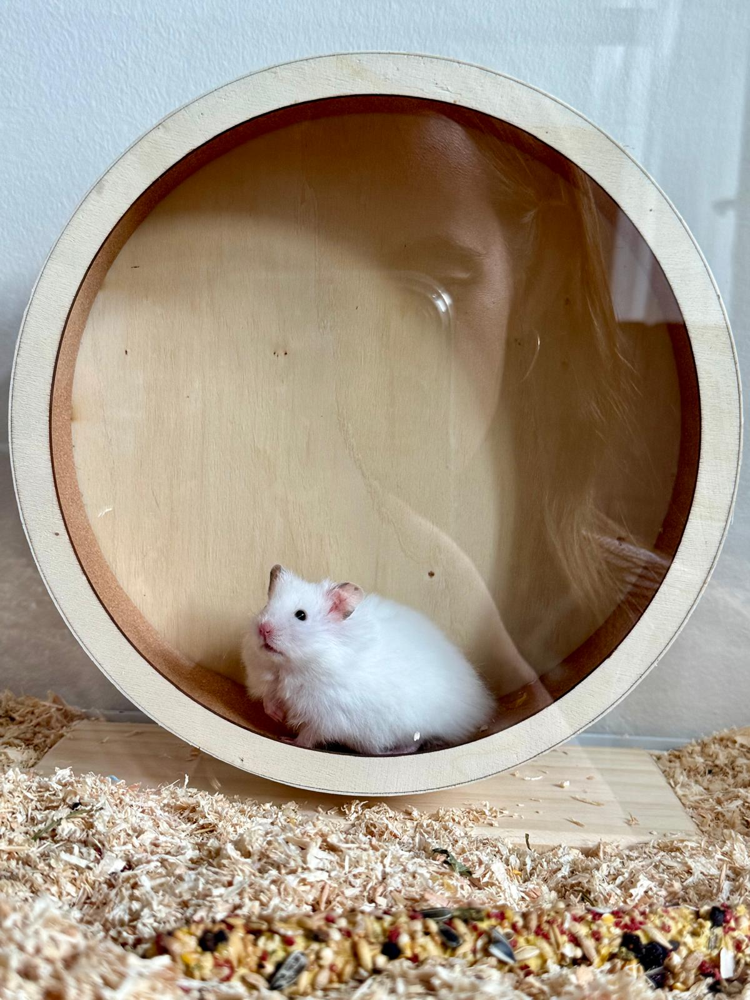

001
The nightly migration
Shortly after dark, Chib begins a sustained journey across the rotating plains. The landscape moves beneath him for considerable distances, while Chib himself remains geographically close to home.
